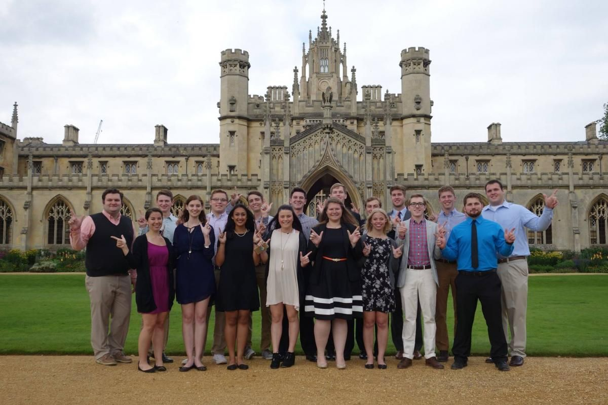

"
Life at any University is always great, but at University of Cambridge, it's a special blend of a
modern life and traditional values.
History, it is said, is a great teacher, and given our glorious and long heritage of over 450 years,
we have had a long time to learn! Combine that with the latest of cutting-edge technologies, and
you have UoC in a nutshell....
"
Hostels
Our homes away from home are as modern as they can be.
More importantly, though have spawned the cultures that make the campus an unforgettable experience.
It's here that midnight cricket tournaments and so many other things find expression.
Clubs
Clubs at UoC are the best place to relax and recharge with the indoor sports facilities including seven Billiards & Snooker Tables, Carrom boards, Chess boards, Table Tennis facilities and a Foosball table.
Sports
Physical recreation through games and sports has been an important part of the Institute since its inception.Today, the Institute has some of the best facilities in a number of games and sports and awards proficiencies in 14 games.
Groups
The ubiquitous student groups are what set UoC apart from other institutes in England, here like-minded work together toward a certain goal- be it getting out a magazine on time, or putting together a one-hour concert, or making a trip to a nearby village for social work.
Guest Houses
University of Cambridge strongly believes in the old Indian adage "Athithi Devo Bhava". We give our visitors the best facilities be it in terms of service, ambience or food. The campus has three guest houses to accommodate the guests and delegates who visit the campus.

Facilities
Right from important institutions of Bank, Post Office, Institute Hospital, to places of Worship as well as hangout facilities, these places form a very essential part of our lives at University of Cambridge.